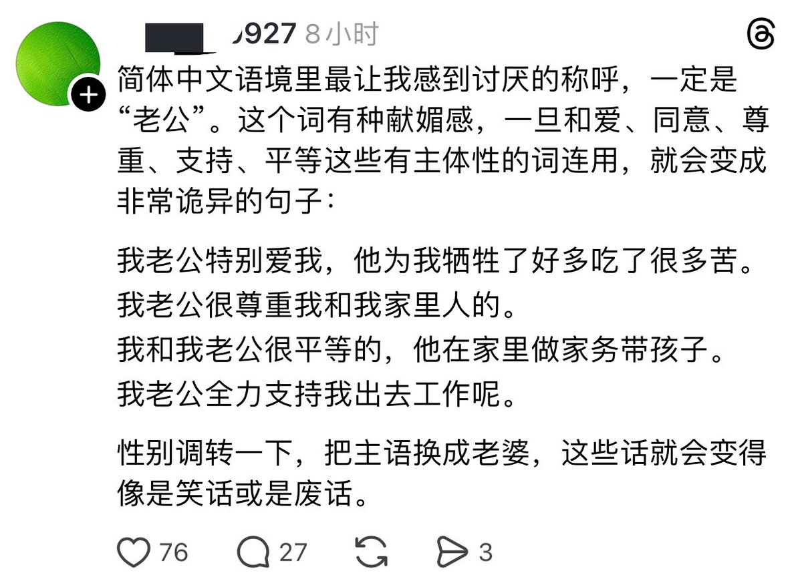

轻松绷住，和token辱华一样好笑，老钟觉得token是抢夺话语权，集美也觉得自己失权了，集美觉得一切女性都会爱自己老公，一切男性都不爱，不尊重，不平等自已老婆，跟不生的人说自己变成了生育机器，不结婚的人成为免费保姆一样好笑，不是说你是男的或者女的就有错，帖主描述的情况是存在的，这种情况也是错的，反过来也一样，男女都不应该去只付出或者只收下
某种意义上健康的爱情是互相尊重，互相理解，平等并希望对方变得更好的，并且两方都互相喜欢对方的，当然如果你喜欢自由，病娇，郁娇，小狗小猫系没有任何问题不是百分百健康的爱情也很好
本来有个什么娇妻文案要耍进去当串子的可惜没找到哈哈哈哈哈
某种意义上健康的爱情是互相尊重，互相理解，平等并希望对方变得更好的，并且两方都互相喜欢对方的，当然如果你喜欢自由，病娇，郁娇，小狗小猫系没有任何问题不是百分百健康的爱情也很好
本来有个什么娇妻文案要耍进去当串子的可惜没找到哈哈哈哈哈
